Evolution
Models
- Conflict Model
- Independence Model
History of evolutionary thought
- Aristole
- Earlies recorded evolutions
- Early non-creationis view
- Spontaneous generation
- Georges Cuvier(1769-1832)
- Founding father of paleontology
- Founding different groupins of organsims in each stratum (pla. strat) of rock
- Geologic epochs
- Jean-Baptiese Pierre Antoine de Monet chelavier del Lamarck
- Published his theories in 1809
- Use the disuse of organs
- Inheritance of "gained traits"
- Charles Darwin (1809-1882)
- Studied to be a physician, then a minister
- Became a traveling naturalist
- Influenced by lamarck and charles Lyell
- Voyage of the Beagles ( also Galapagos Islands)

- Thomas Robert Malthus
- Scholar of economy and demography
- "Essay on the priciple of population"
- Natural Selection
- Limited Resources
- Variable survivability
- Variable survivability & production of offspring is tied to what traits you have
- The variable traits that results in the variable success are passed on to offspring
- A greater proportion of the next generation will exhibit successful traits

- Darwins's Hypothesis
- Evolution = descent with modification
- Recent evidence for Galapagos Finches: 1977 drought

- Modification occurs within populations
- Variable traits correlate with variable success
- Variation seen in a population is heritable
- Descent was from a common ancestor
- Alfred Russel Wallace
- Sends Darwin his independently written theory of natural selection
- Uses biogeography as support for evolution:

- Lulian Huxley
- The Modern Sythesis, also called Neo-Darwinian theory

Genetics
Why do organisms show variablility to begin with? Why is there still variablility in populations?
Evolution
- Change in inherited characteristics of a population from generation to genereation
- Change in gene frequencies of a population from generation to genereation
- Populations, not individuals
Species and Populations
- Populaton: group of individuals of a given species who live in the same geographical area
- Species: largest group of organisms in which any two individuals of the appropriate sexes or mating types can produce
fertile offspring, typically by sexual reproduction
Evolution
- Occurs through 5 processes:
- Natural selection
- Mutation
- Migration
- Genetic drift
- Non-random mating
Natural Selection
- the process whereby organisms better adapted to their environment tend to survive and produce more offspring. The theory of its action was first fully expounded by Charles Darwin and is now believed to be the main process that brings about evolution.
Fitness
- "Fittest": not "Biggest, Strongest, Smartest"
- Fitness is context dependent

Differentail Reproduction
- the idea that those organisms best adapted to a given environment will be most likely to survive to reproductive age and have offspring of their own.
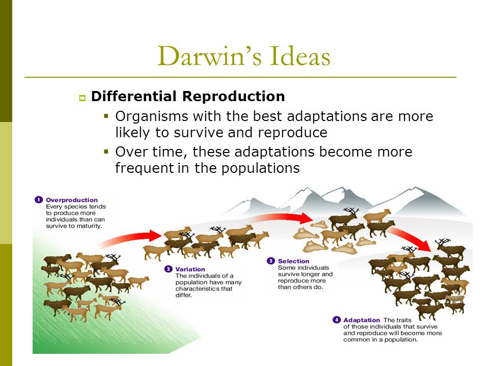
Mutatuion
- permanent alteration of the nucleotide sequence of the genome of an organism, virus, or extrachromosomal DNA or other genetic elements
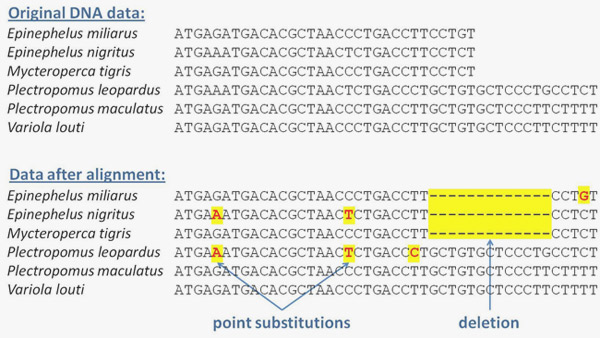
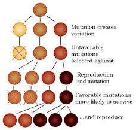
Migration
- The movement of genes from one population into another.
Genetic Drift
- Change in gene frequency not due to mutation, migration, or natural selection
- Founder effect
- Few individuals isolated from larger population
- Low genetic variability
- Characteristics of population influenced by chance
- Higher chance for inbreeding
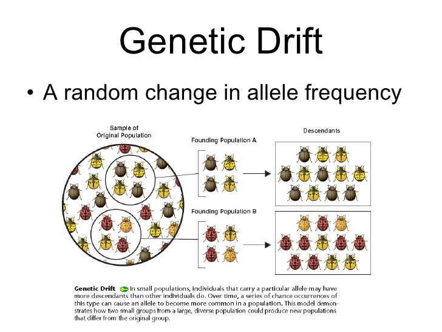
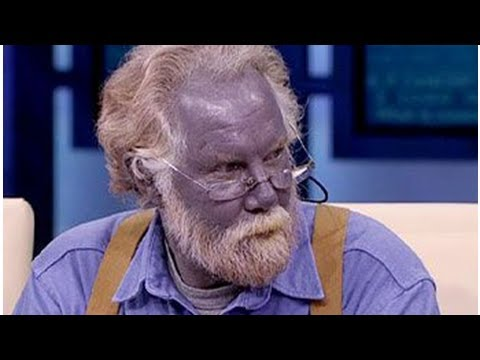
Genetic Bottleneck
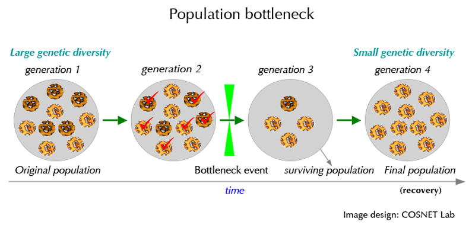
Non-random mating
- Behavioral ecology
- We don't select sexual partners at random
- We selct the based onthe best combination of traits topass to ofsptring to ensure survival
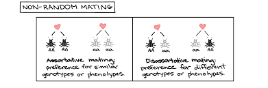
Random mating does happen too
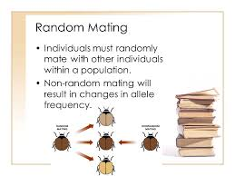
Sexual Selection
- Natural selction arising through preference by on sex for certain characteristics individuals in others
- Signaling Honesty
- Honest signals - stag antlers
- Dishonest signals - fiddler crab
Zahavie's Handicap Principle
More burden you can take on the extreme sexual selection and still survive, the better mat you may be
Runaway Sexual Selection
- Trait is selected for the sole purpose of making offspring attractive, reight up to the point of being detrimental
Some other images
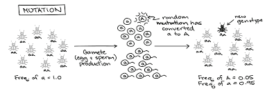
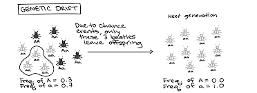
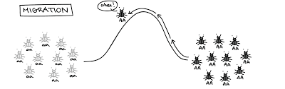